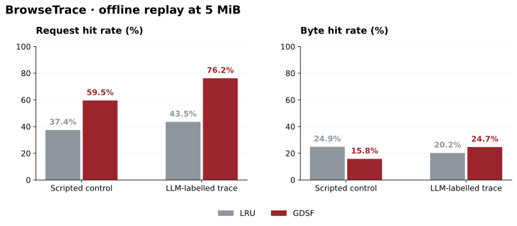

An agent’s final answer hides the requests it took to get there. BrowseTrace makes that traffic inspectable, then lets us replay it under different cache policies.
Gennaro Francesco Landi · 30 September 2026 · Research artifact
6 × 5cache policies × capacities replayed per trace
The engineering question
Browser agents consume infrastructure while they navigate: documents, scripts, images and repeated fetches. A task-success score does not tell us which objects a cache could reuse. I built BrowseTrace to expose that request-level workload and make cache experiments replayable.
The collector records typed request metadata, response sizes and timing, with a separate projection for cache simulation. The release includes sanitization tools, a dataset card and validation scripts. This page focuses on what can be checked directly from the public replay CSVs.
At 5 MiB, GDSF serves a larger fraction of requests from cache than LRU on both released traces. On the scripted control, it serves a smaller fraction of bytes. The metric changes the conclusion.

Fresh offline replay of the public CSVs using libCacheSim 0.3.3.post4. Cold cache for every policy and capacity; stored row order. Higher is better on each axis. No network latency was measured.
At 5 MiB; percentages rounded to one decimal. Differences are percentage points.
Trace
Metric
LRU
GDSF
Difference
Scripted
Request hit rate
37.4%
59.5%
+22.1 pp
Scripted
Byte hit rate
24.9%
15.8%
−9.1 pp
LLM-labelled
Request hit rate
43.5%
76.2%
+32.7 pp
LLM-labelled
Byte hit rate
20.2%
24.7%
+4.5 pp
LRU evicts the least recently used object. GDSF combines size and frequency in its priority calculation. That gives a plausible reason to inspect object sizes when request and byte metrics diverge. This replay measures the divergence; it does not isolate a causal mechanism.
The complete sweep includes LRU, LFU, ARC, S3-FIFO, W-TinyLFU and GDSF at 1, 5, 10, 25 and 50 MiB. The figure above is a readable slice, not the whole experiment.
A release filename is not a session count.
During this recheck, I counted the rows and distinct session labels rather than inheriting the README’s totals. The scripted CSV has 400 distinct nonempty session IDs. The file called llm_full_901.csv has 100. Neither the filename nor those repeated labels are sufficient to reconstruct the number of collection sessions.
The raw LLM session bundles are absent from this public snapshot. I therefore report measured CSV rows and session labels, and keep broader collection counts out of this result. The repository documentation now makes that boundary explicit.
The control is scripted, not human. These two aggregate workloads support a descriptive cache comparison. They do not establish that LLM agents behave like, or unlike, a representative population of human web users.
Reproduce the result
The replay reads existing files and makes no model or browser calls. Input SHA-256 hashes, software version and every result are recorded in the JSON output.
libCacheSim needs a compatible Python environment; its package dependencies can vary by platform. The reference replay used Python 3.12.2 on macOS arm64. The chart script reads the committed aggregate JSON, so plotting alone does not need the simulator.
What this experiment leaves open
This is an object-cache simulation. It does not enforce HTTP freshness, Vary or origin cache-control rules, and it does not measure serving latency or throughput. The cache policies see the released keys and object sizes, in the same stored sequence.
Production deployment needs those HTTP constraints and a representative workload. A human comparison needs a human dataset. The useful contribution here is the inspectable measurement path: a request becomes a trace row, a trace becomes a replay, and a reported result can be checked against both.